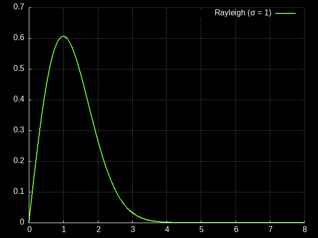

this warning lets the reader know something important about the page. If this sentence is still here on a page different than the testpage.html then I forgot to change it while making a new page.
link to this page
Cybersecurity
 Basics - put basic info here.
The image located on the right comes from the img element above, swap it to whatever illustration you want.
The image will always be rescaled to match the one you see here in height (400px) and I highly recommend making it square.
Basics - put basic info here.
The image located on the right comes from the img element above, swap it to whatever illustration you want.
The image will always be rescaled to match the one you see here in height (400px) and I highly recommend making it square.
Rayleigh distribution in cybersecurity

One of the common elements of many models of software development is the Rayleigh curve (image on the right), which starts at zero, grows to a peak, and then asymptotically approaches (but never reaches) zero.
One of the properties of software that seems to roughly follow this curve is the number of exploits fixed - when the software is first launched no exploits are known, then rapidly many easy exploits are discovered and fixed, then as time goes on fewer and fewer exploits are found and fixed, and each additional unit of develompent time yields diminishing returns.
There is hypothetically a finite number of exploits in any given piece of software (assuming that new ones aren't being introduced) and as such hypothetically a fully exploit-free piece of software could be eventually achieved, but by definition there is no way to know if there are any undiscovered exploits left.
For highly sensitive use cases this means that a vast amount of resources will be poured into exploring the asymptotic tail, and new features are unlikely to appear as to not introduce new exploits that could be found easily.
In the modern day for the most sensitive use cases it is common to use only time-hardened software that had gone through gigaseconds of testing without finding new exploits.
Nonetheless, cases aren't unheard of that after 200 years of testing and finding nothing, a new severe exploit is found, a reminder that the asymptotic tail never quite reaches zero.
Exploits found deep in the asymptotic tail usually require vast expert knowledge to understand and execute, or even may be too complicated for human-level adversaries to use.
Time-hardened software predictably tends to feel outdated and poor in features, since understandably being in the testing and hardening phase for centuries prevents it from gaining any new modern features and might even result in losing some that are found to be too easily exploitable - this ofcourse works only one way, and assuming that a piece of software is time-hardened just because it is old or poor in modern features would be a mistake.
Discussion of what attacks lay in the deep asymptotic tail and how to defend against them can be difficult outside of expert circles, as it tends to attract various kinds of software mysticism and attitudes that treat cybersecurity like magic rather than engineering.